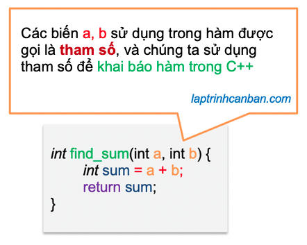
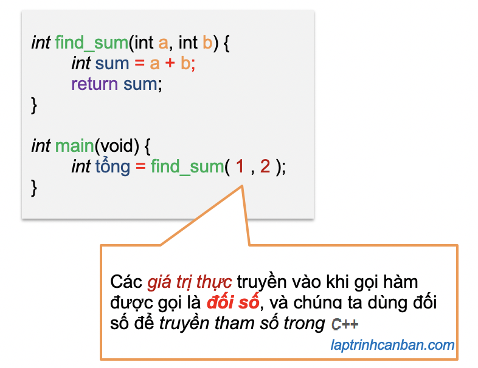
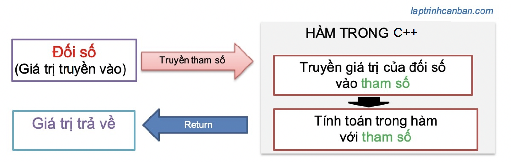
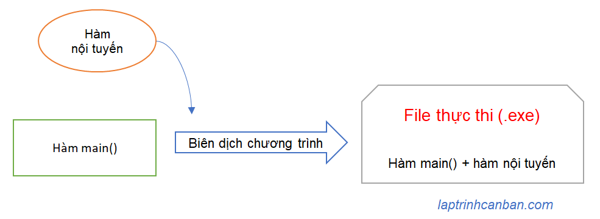
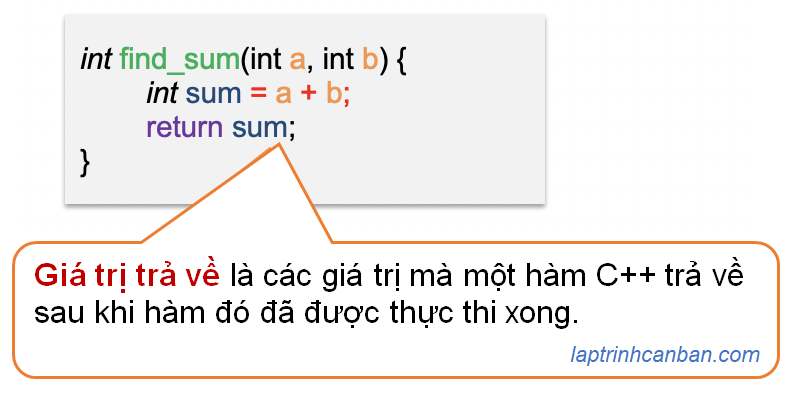

Cùng tìm hiểu về hàm trong C++. Bạn sẽ học được khái niệm hàm trong C++ là gì, cấu trúc hàm trong C++ với các thành phần cơ bản như tham số, đối số và giá trị trả về. Bạn cũng sẽ biết về các loại hàm trong C++ bao gồm hàm main() trong C++, các hàm có sẵn trong C++ và hàm C++ do người dùng định nghĩa. Ngoài ra bạn cũng sẽ học về đối số mặc định của hàm trong C++ cũng như cách nạp chồng hàm trong C++ sau bài học này.
Chúng ta cần quan tâm tới ba thành phần sử dụng trong hàm C++ như sau:
- Tham số (Parameter)
- Đối số (Argument)
- Giá trị trả về (Return values)
Chúng ta cũng cần quan tâm tới 3 khái niệm trong hàm C++ dưới đây:
- Đối số mặc định (Default Argument)
- Hàm nội tuyến trong C++ (Inline functions)
- Nạp chồng hàm trong C++ (overload)
Và chúng ta cũng cần làm chủ 3 loại hàm trong C++ như sau:
- Hàm main trong C++
- Hàm có sẵn trong C++
- Hàm C++ do người dùng định nghĩa
Hãy cùng Kiyoshi làm rõ các kiến thực này ở phần dưới đây.
Hàm trong C++ là gì
Trong bài Cấu trúc cơ bản và quy tắc viết chương trình C++ chúng ta đã biết trong ngôn ngữ C++, chương trình là một tập hợp các hàm, với mỗi hàm trong chương trình là “tập hợp các quy trình” cần xử lý. Nói cách khác, ngôn ngữ C++ sử dụng hàm để tạo nên các chương trình, và hàm chính là thành phần quan trọng bậc nhất lập trình C++.
Vậy, hàm trong C++ là gì?
Hàm trong C++ là một tập hợp các xử lý nhằm thực hiện một chức năng cụ thể nào đó trong chương trình. Hàm cho phép bạn kết hợp các xử lý khác nhau thành một và đặt tên cho nó. Sau khi tạo và đặt tên cho một hàm, chúng ta chỉ cần gọi tên hàm ra mỗi khi cần sử dụng đến nó trong chương trình.
Bằng cách kết hợp các xử lý lại thành một hàm, chúng ta không cần viết lại các xử lý nhiều lần, qua đó có thể giảm sai sót khi viết code, cũng như có thể tái sử dụng hàm cho một chương trình khác.
Một hàm có thể nhận một giá trị và trả về một giá trị đã trải qua một số xử lý, do đó nó có khả năng tạo ra công suất tối đa chỉ với lượng mã chương trình tối thiểu.
Không quá lời khi nói rằng làm chủ hàm trong C++ là một kỹ năng cần thiết mà bất kỳ lập trình viên nào cũng cần phải có.
Cấu trúc hàm trong C++
Khi học về hàm trong C++ chúng ta cần nắm rõ cấu trúc hàm gồm 3 thành phần chính, đó là tham số, đối số và giá trị trả về.
Để hình dung ra các thành phần có hàm trong C++, hãy cùng xem một ví dụ đơn giản về hàm sau đây. Hàm giúp chúng ta tính tổng hai số và trả về kết quả trong chương trình như sau:
int find_sum(int a,int b){ |
Chúng ta viết kiểu dữ liệu trả về từ hàm (int), sau đó đến tên hàm (find_sum), rồi kiểu và tên biến sử dụng trong hàm (int a,int b), và cuối cùng là các xử lý trong hàm nằm giữa cặp ngoặc nhọn {}.
Trong hàm trên, các biến có tên như a và b sử dụng khi chúng ta khai báo hàm ở trên được gọi là tham số.
Sau khi khai báo một hàm, chúng ta có thể sử dụng hàm đó bằng cách gọi hàm trong C++ như dưới đây:
|
- Chi tiết về cách khai báo và gọi hàm trong C++, bạn hãy xem tại bài viết Khai báo và gọi hàm trong C++.
Khi chúng ta gọi hàm trong C++, chúng ta truyền các giá trị thực như 1 và 2 ở ví dụ trên vào tham số và tính toán trong hàm. Các giá trị thực được truyền vào khi gọi hàm được gọi là đối số, và việc truyền giá trị thực vào hàm để tính toán gọi là truyền tham số trong C++.
Sau khi hàm được thực thi xong, hàm sẽ trả về cho chúng ta một giá trị, và chúng ta gọi đây là giá trị trả về của hàm C++.
Hãy cùng tìm hiểu kỹ hơn về tham số, đối số và giá trị trả về trong C++ ở dưới đây.
Tham số và đối số trong C++
Tham số là gì | Parameter
Tham số (parameter) là các biến có kiểu và tên được sử dụng để nhận các giá trị truyền vào (Đối số- argument) để xử lý trong hàm. Tham số được sử dụng khi chúng ta khai báo hàm trong C++.

Các tham số sử dụng trong hàm đều cần chỉ định kiểu và tên của nó. Và kiểu, tên của tham số cần phải giống với kiểu, tên của loại đối tượng mà nó sẽ nhận khi đối tượng đó được truyền vào hàm.
Ví dụ, nếu bạn muốn truyền giá trị là một số thuộc kiểu int, thì bắt buộc là tham số khai báo trong hàm cũng phải thuộc kiểu int. Tương tự nếu đối tượng truyền vào là một char, hay một chuỗi, bạn cũng cần phải chỉ định kiểu char hay char[] tương ứng.
Đối số là gì | Argument
Đối số (argument) là các giá trị thực được truyền vào khi gọi hàm. Đối số được truyền vào hàm qua sẽ được gán vào tham số, và được sử dụng khi chúng ta gọi hàm trong C++.

Có nhiều loại giá trị có thể truyền vào hàm khi chúng ta gọi hàm, ví dụ như biến, con trỏ và cấu trúc chẳng hạn. Với mỗi loại đối tượng như vậy sẽ có kiểu dữ liệu khác nhau, và chúng ta cần cần chú ý phải truyền đối tượng vào hàm có kiểu dữ liệu giống với kiểu của tham số tương ứng trong hàm dùng để nhận nó.
Ví dụ nếu khi khai báo hàm, chúng ta sử dụng một tham số có kiểu int, thì chúng ta cũng chỉ có thể truyền đối số có cùng kiểu int vào hàm mà thôi. Nếu không thì hàm không chạy được và lỗi sẽ bị xảy ra.
Sự khác biệt giữa một đối số và một tham số
Kiyoshi chắc chắn rằng trước khi đọc bài viết này, sẽ có không ít bạn còn mập mờ chưa biết cách phân biệt tham số và đối số trong C++ đâu nhỉ. Tuy nhiên qua những phân tích ở trên, bạn đã hiểu đươc tham số và đối số trong C++ khác nhau như thế nào chưa? Hãy cùng tổng kết sự khác nhau giữa đối số và tham số nhé.
- Tham số là các biến có tên được sử dụng trong khai báo hàm.
- Đối số của hàm là các giá trị thực được truyền vào khi gọi hàm.
- Tham số nhận giá trị của các đối số được truyền vào từ ngoài hàm và thực hiện tính toán bên trong hàm.
Truyền tham số trong C++
Khi gọi một hàm số trong javascript, chúng ta sẽ truyền các đối số (giá trị thực) vào hàm thông qua các tham số. Việc truyền đối số vào hàm thông qua tham số được gọi là truyền tham số trong C++, và được miêu tả như hình dưới đây:

Đối số mặc định của hàm trong C++ (Default Argument)
Trong số đối số của hàm, đối số có giá trị mặc định được gọi là đối số mặc định của hàm trong C++. Đối số mặc định có thể được bỏ qua khi gọi hàm.
Thông thường khi gọi hàm trong C++, chúng ta sẽ chỉ định giá trị của đối số và truyền vào hàm. Tuy nhiên trong một số trường hợp khi chúng ta lược bỏ và không chỉ định giá trị cụ thể cho đối số, khi đó hàm sẽ sử dụng giá trị của đối số mặc định để tiến hành tính toán trong hàm.
Ví dụ cụ thể, chúng ta hãy so sánh trường hợp có dùng và không dùng đối số mặc định trong hàm increment() dưới đây:
|
Kết quả:
Dung doi so mac dinh: 6 |
Có thể thấy lần gọi hàm đầu tiên và lần gọi thứ hai khác nhau ở chỗ, chúng ta có chỉ định giá trị cho đối số hay không. Và trong lần gọi đầu tiên, do chúng ta không chỉ định giá trị cho đối số, nên hàm đã sử dụng giá trị của đối số mặc định để tính toán trong hàm.
Nạp chồng hàm trong C++ (overload)
Chồng hàm (overload) là một tính năng được hỗ trợ trong nhiều ngôn ngữ lập trình, trong đó có C++. Tính năng này cho phép chúng ta định nghĩa nhiều hàm với cùng một tên nhưng có khác nhau về các tham số đầu vào hay đầu ra.
Và việc sử dụng nhiều hàm với các định nghĩa khác nhau có cùng tên hàm trong chương trình được gọi là nạp chồng hàm trong C++.
Việc nạp chồng hàm trong C++ có thể xảy ra khi các signature của hàm, bao gồm tên và các kiểu tham số trong thứ tự khai báo trong các hàm cùng tên là khác nhau.
Ví dụ cụ thể, 3 hàm sau đây tuy có cùng tên nhưng có signature khác nhau, dẫn đến việc nạp chồng hàm trong C++ có thể xảy ra, và chúng ta có thể sử dụng đồng thời chúng với cùng tên trong chương trình.
int sum(int a, int b) { ... } // sum(int, int) |
Ngược lại, nếu các hàm cùng tên mà lại có cùng signature thì việc nạp chồng hàm trong C++ không thể xảy ra, như các hàm sau đây:
int sum(int a, int b) { ...} |
Hàm nội tuyến trong C++ (Inline functions)
Hàm nội tuyến trong C++ (Inline functions) là hàm có định nghĩa được mở rộng tại thời điểm biên dịch chương trình.
Do hàm nội tuyến chỉ được mở rộng định nghĩa tại thời điểm biên dịch chương trình, nên chúng ta không thể gọi hàm khi chạy chương trình.
Điều đó có nghĩa là, trong quá trình biên dịch chương trình C++ thì hàm nội tuyến sẽ tiến hành chèn bản thân nó vào các vị trí nó được gọi, qua đó chèn code của nó vào trong file thực thi chương trình (exe). Sau đó khi chúng ta chạy chương trình bằng file exe, chúng ta không gọi hàm nội tuyến, mà là sử dụng chính code của nó đã được chèn sẵn.

Để khai báo hàm nội tuyến trong C++, chúng ta chỉ cần thêm từ khóa inline vào trước khi khai báo một hàm thông thường là có thể biến hàm đó thành hàm nội tuyến rồi.
Ví dụ:
inline double square(double x) |
Và chúng ta cũng gọi hàm nội tuyến trong C++ tương tự như với các hàm bình thường khác như sau:
|
Hàm nội tuyến có tác dụng giống như macro trong ngôn ngữ C, tuy nhiên thì do nó không được gọi khi chạy chương trình, mà được gọi khi biên dịch chương trình, nên sẽ giúp chúng ta tránh được hiện tượng overhead khi chạy chương trình.
Giá trị trả về (Return value) trong hàm C++
Giá trị trả về giống như chính tên của chúng, là các giá trị mà một hàm trả về sau khi hàm đó đã được thực thi xong.

Các giá trị trả về của hàm có thể là một số, một con trỏ, một ký tự hay bất cứ loại dữ liệu nào được quy định khi khai báo hàm.
Và kiểu dữ liệu sẽ trả về từ hàm cần được chỉ định rõ khi chúng ta khai báo hàm trong C++. Ví dụ hàm tính tổng ở trên sẽ chỉ trả về giá trị thuộc kiểu int mà thôi.
int find_sum(int a,int b){ |
Tuy nhiên cũng có những lúc chúng ta cần tạo ra hàm mà không trả về bất cứ giá trị nào từ nó cả. Lúc này, thay vì chỉ định kiểu cho giá trị trả về, chúng ta sẽ dùng tới void trong C++, có tác dụng không trả giá trị về từ hàm.
Ví dụ, chúng ta sử dụng lệnh void trong C++ để không trả giá trị về từ hàm sau:
void find_sum_void(int a,int b){ |
Hàm find_sum_void() và hàm find_sum() ở trên đều có chức năng tính tổng, tuy nhiên thay vì trả về tổng từ hàm, thì hàm find_sum_void() sẽ in luôn kết quả bên trong hàm, mà không trả về bất cứ giá trị nào khác từ hàm.
Lại nữa, để trả về giá trị từ hàm, chúng ta cần dùng tới lệnh return trong C++. Bạn có thể tìm hiểu về return tại bài viết chi tiết sau đây:
- Xem thêm: Return trong C++ và giá trị trả về
Các hàm trong C++
Sau khi đã biết các định nghĩa sử dụng trong hàm C++, sau đây chúng ta sẽ cùng tìm hiểu các loại hàm trong C++ nhé.
Trong C++ có 3 loại hàm, đó là hàm main trong C++, các hàm có sẵn trong C++, và hàm C++ do người dùng định nghĩa.
Hàm main trong C++
Trong ngôn ngữ C++, một chương trình là một tập hợp các hàm, với mỗi hàm trong chương trình là “tập hợp các quy trình” cần xử lý. Và trong các hàm đó thì hàm main() trong C++ là hàm đầu tiên được thực thi khi bắt đầu chạy một chương trình C++.

Chi tiết về hàm main() đã được Kiyoshi trình bày chi tiết ở bài viết sau đây:
- Xem thêm: Hàm main trong C++
Các hàm có sẵn trong C++
Các hàm có sẵn trong C++ là các hàm được chuẩn bị sẵn trong các thư viện chuẩn của C++. Các hàm này được tích hợp bên trong các header file, ví dụ như hàm strlen() tích hợp trong header file [cstring] chẳng hạn.
Các hàm này mặc dù đã được chuẩn bị sẵn, nhưng chúng ta chỉ có thể thực thi chúng trong chương trình C++, nếu chúng ta gọi chúng bên trong hàm main() mà thôi.
Lại nữa, để sử dụng được các hàm có sẵn này, chúng ta cần phải thêm (include) các header file này vào đầu mỗi chương trình.
Ví dụ, các hàm như hàm print(), hàm cin >> () v.v.. đều là các hàm có sẵn trong tích hợp trong header file [iostream], hay hàm strlen() lại được tích hợp trong header file [cstring], và chúng ta cần include các file này trong chương trình như sau:
|
Kết quả:
Nhap chuoi ky tu: abc |
Hàm C++ do người dùng định nghĩa
Hàm C++ do người dùng định nghĩa (user-defined functions)) là các hàm mà chúng ta tự mình tạo ra bằng cách khai báo chúng trong chương trình. Sau khi khai báo hàm, chúng ta có thể sử dụng chúng trực tiếp trong chương trình bằng cách gọi chúng tại bất kỳ thời điểm nào mà chúng ta muốn.
Hàm C++ do người dùng định nghĩa có ưu điểm rất lớn, đó là sự tự do điều chỉnh hàm theo ý mà bạn muốn, bởi vì hàm là do bạn tự tạo ra, tự bạn thiết kế và làm chủ nó.
Khác với các ngôn ngữ lập trình khác như Python hay JavaScript với hệ thống phong phú các hàm có sẵn, giúp chúng ta thực thi dễ dàng hầu như tất cả các xử lý cần có trong chương trình, thì trong ngôn ngữ C++, phần lớn các xử lý cần thiết trong chương trình đều không có hàm có sẵn tương ứng trong thư viện chuẩn.
Đây cũng là cái khó, nhưng cũng là điểm thú vị khi lập trình bằng ngôn ngữ C++. Khó là ở chỗ chúng ta hầu như phải tự tạo ra tất cả các hàm để có thể xử lý trong chương trình, và thú vị ở đây là ở chỗ, chúng ta có thể tự do trong việc viết chương trình, cũng như tìm được niềm vui thông qua việc tự lập trình hàm.
Cách khai báo hàm trong C++ cũng khá là đơn giản, chúng ta viết kiểu dữ liệu trả về từ hàm trước, sau đó đến tên hàm, rồi kiểu và tên biến sử dụng trong hàm, và cuối cùng là các xử lý trong hàm nằm giữa cặp ngoặc nhọn {}.
Ví dụ chính là hàm tính tổng mà chúng ta đã sử dụng ở trên.
int find_sum(int a,int b){ |
Cách sử dụng hàm C++ do người dùng định nghĩa cũng giống như các hàm khác, sau khi bạn đã khai báo hàm xong, chỉ cần gọi tên hàm khi cần sử dụng là xong.
|
- Chi tiết về cách khai báo và gọi hàm trong C++, bạn hãy xem tại bài viết Khai báo và gọi hàm trong C++.
Tổng kết
Trên đây Kiyoshi đã hướng dẫn bạn về hàm trong C++ rồi. Để nắm rõ nội dung bài học hơn, bạn hãy thực hành viết lại các ví dụ của ngày hôm nay nhé.
Và hãy cùng tìm hiểu những kiến thức sâu hơn về C++ trong các bài học tiếp theo.
HOME>> lập trình c++ cơ bản dành cho người mới học lập trình>>11. hàm trong c++